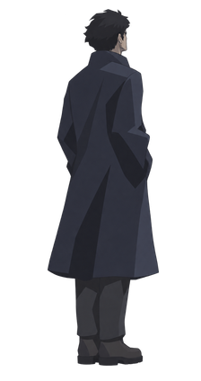

<!doctype html>
<!-- One Night, shot 2. All movement is evaluated on the local scene clock. It opens with the
     walker's coat where shot 1 left it on screen (an axial cut: the eye stays on him while the
     frame widens), then tilts up to the sea as he stops. -->
<meta charset="utf-8">
<style>
/* Independent coastal planes and full-body character cels. */
#world, .plane { width:1920px; height:1080px; position:absolute; }
img { position:absolute; object-fit:fill; }
.shimmer-a { animation: sheen-a 2.5s ease-in-out infinite; }
.shimmer-b { animation: sheen-b 2.5s ease-in-out infinite; }
@keyframes sheen-a {
  from { transform:translate(-5px,0px); opacity:.62; }
  50% { transform:translate(5px,2px); opacity:.91; }
  to { transform:translate(-5px,0px); opacity:.62; }
}
@keyframes sheen-b {
  from { transform:translate(4px,0px); opacity:.74; }
  50% { transform:translate(-4px,2px); opacity:.40; }
  to { transform:translate(4px,0px); opacity:.74; }
}
#man { position:absolute; }
.shadow { position:absolute; background:radial-gradient(ellipse farthest-side, #02060bbd, #05091060 42%, transparent 100%); }
</style>
<main data-composition-id="horizon" data-width="1920" data-height="1080" data-duration="5" style="background:#070c15">
  <div id="world" data-hf-camera='[{"at":0,"zoom":1,"anchorX":0.5,"anchorY":0.486},{"at":0.3,"anchorX":0.5,"anchorY":0.49,"easing":"smooth"},{"at":2.3,"anchorX":0.51,"anchorY":0.61,"easing":"smooth"},{"at":5,"anchorX":0.48,"anchorY":0.615,"easing":"smooth"}]' data-hf-camera-subject="man" data-hf-camera-anchor="0.5 0.486" data-hf-camera-lag="0.16" data-hf-camera-lookahead="0.08">
  <div class="plane" data-hf-parallax="0.12">
    
    
  </div>
  <div class="plane" data-hf-parallax="0.24">
    
    
    
    
    <div style="position:absolute;left:1090px;top:376px;width:700px;height:284px;background:radial-gradient(ellipse farthest-side at 50% 42%,#b2cce426,#92aed116 42%,transparent)"></div>
  </div>
  <div class="plane" data-hf-parallax="0.32">
    
  </div>
  <div class="plane" data-hf-parallax="1">
    
  </div>
    <div id="man" style="left:1090px;top:506px;width:195.0px;height:351.5px" data-hf-keyframes='[{"at":0},{"at":1.34,"x":20,"y":-13.5},{"at":1.6,"x":22,"y":-15,"easing":"ease-out"},{"at":5,"x":22,"y":-15}]'>
    <div class="shadow" style="left:19.5px;top:330.0px;width:141.0px;height:27.5px"></div>
      
      
    </div>
  <div class="plane" data-hf-parallax="1.3">
    
  </div>
  </div>

</main>
